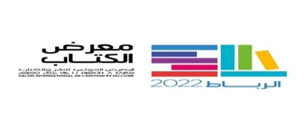

تقديم
لقد دأبت وزارة العدل على المشاركة في المعرض الدولي للنشر والكتاب كل سنة، وقد تكللت بمشاركتها هذه السنة في الدورة السابعة والعشرين للمعرض الدولي للنشر والكتاب بألوان إفريقية خلال الفترة الممتدة ما بين 03 و12 يونيو 2022 بالرباط. اشتغلت وزارة العدل هذه السنة برؤية جديدة يتوافق فيها القانوني بالرقمي ورفعت لذلك شعار " الرقمنة دعامة أساسية لمنظومة العدالة"، كما تم التركيز على العديد من الإضافات النوعية التي جعلت من رواق وزارة العدل بوابة مفتوحة تستقبل كل المهتمين بشؤون العدالة، ومن أهم هذه الإضافات:
- البرمجة الرسمية لحضور السيد الوزير بالمعرض، وما لهذا الحضور من دلالة رمزية تظهر الاهتمام بالبعد الثقافي، والرفع من قيمة ال...........لهكذا تظاهرات على صورة الوزارة1.
- إعطاء السيد الوزير لانطلاقة مشروعين مفصليين )بوابة عدالة، الموقع الرسمي للوزارة( يعدان من بين أهم خارطة طريق توجه القيادة الجديدة.
- تبني الوزارة لفكرة تخصيص جناح خاص للإبداعات الفكرية والثقافية للموظفين، والتي تناغمت مع شرط الكتاب.
- عرض إصدارات الوزارة من الكتب، طيلة فترة المعرض ،والحرص على التواصل مع الجمهور المهتم حولها، بدعم من قسم التواصل في تبسيط المعلومة.
- تناغم الشعار " الرقمنة دعامة أساسية في منظومة العدالة " مع شرط الكتاب.
- اختيار الرواق الذي تماشى مع الشعار والعروض المقدمة حول الرقمنة.
- إشراك كل الوحدات المركزية من خلال تقديم عروض بالرواق تتماشى مع مهام المديرية المعنية.
- طريقة تدبير منصة الرواق وذلك بتغييرها حسب الحاجة وحسب الضيوف.
- طريقة التذكير باستمرار بالموضوع المختار
- التجاوب مع المنابر الإعلامية والمجتمع المدني باختلاف مشاربه.
برنامج الدورة 27 للمعرض الدولي للنشر والكتاب-2022-
الـــرؤيـــــة
من خصائصه الكبرى: الاشتغال ضمن خطة تواصلية شملت جوانب عدة أبرزها شكل الرواق والاختيار الموضعي لفضاءاته ومكوناته. كان الهدف من هذا الاختيار التماهي مع الشعار والمواضيع المقترحة، والتي شكل موضوع الرقمنة أساسا لها، وهو ما يفسره كذلك اختيار الألوان )الأزرق المعبر عن الرقمنة ،والأصفر الترابي والذي يزيد من قيمة الأشياء المعروضة باعتباره اللون المختار في المتاحف( ،توفير حد أقصى من الرواق لعرض الكتب سواء التي تتوفر عليها خزانة وزارة العدل، أو مركز الدراسات وأبحاث السياسة الجنائية، أو التي تعلقت بالإبداعات الفكرية والثقافية للموظفين، والتي تم رصها بشكل يسهل على الزوار الولوج إلى المعلومة عبر الاطلاع عليها.
شكل رواق وزارة العدل

تميز رواق وزارة العدل هذه السنة ب
فضاء مستوعب للكتاب عرضا؛
فضاء مستوعب لعرض المكتبة الالكترونية عدالة في تقاسم متناغم مع مناسبة الكتاب
فضاء يؤثث لبعض الإصدارات التاريخية التي وضعت في رفوف صفراء تفاعلا مع استعمال المتاحف لهذا اللون لإعطاء قيمة لما هو معروض؛
التفاعل بشاشات العرض ،من خلال الولوج إلى بوابة عدالة والموقع الرسمي للوزارة؛
احترام الولوجيات.
فضاء لعرض الكتب وجديد الإصدارات

فضاء لعرض الوثائق التاريخية في الرصيد المعرفي
 i
i
لقد تم تعزيز رواق وزارة العدل ببعض الوثائق التاريخية، أسوة ببعض الأروقة الحكومية التي تضفي على معروضاتها قيمة مضافة، تغني عن دافع العرض من أجل البيع فقط.

شاشات لعرض المواقع الجديدة للوزارة
تميزت هذه الدورة بعرض إصدارات للسيد الوزير عبد اللطيف وهبي، وإصدارات في مختلف المواضيع، إضافة إلى منشورات مركز الدراسات وأبحاث السياسة الجنائية وإصدارات موظفي العدل الفكرية والثقافية، والكتب الموجودة بخزانة وزارة العدل )انظر الملحق رفقته

إصدارات فكرية وثقافية لموظفي وزارة العدل

لقاءات تواصلية طيلة أيام المعرض:
لقد تميزت هذه الدورة بالنسبة لوزارة العدل بالحضور الوازن للسيد الوزير والوفد المرافق له، حيث أعطي السيد الوزير الانطلاقة الفعلية لموقعين هامين )بوابة عدالة التي هي مكتبة رقمية، والموقع الرسمي لوزارة العدل( يحيلان على الأهمية التي يوليها للرقمنة، كما تصادف وجوده بالرواق مرور وزير الثقافة ووفد أجنبي، في تفاعل وتواصل بين الوزيرين والوفد المرافق له، كما غص الرواق بمختلف وسائل الإعلام التي كانت في الموعد.


العروض واللقاءات التفاعلية
احتضن الفضاء المخصص للندوات برواق وزارة العدل بالمعرض الدولي للنشر والكتاب ،عدة لقاءات وندوات وفق برنامج تم الإعلان عنه بمختلف الوسائط، عرف نجاحا كبيرا تم خلاله التفاعل المباشر مع الطلبة الباحثين والفاعلين في الحقل القانوني وعموم المواطنين .وتم اختيار مواضيع الندوات بمقاربة تشاركية تراعي تفاعلات المواطنين وتدخلات الوزارة في هذا الصدد.
العروض
العرض الأول : حول موضوع" التحول الرقمي :سياسة ممنهجة لخدمة أرقى وأجود
الرقمنة من قلب رواق وزارة العدل بالمعرض الدولي للنشر والكتاب، بعد إطلاق السيد الوزير لمنصة" عدالة 2 " و " الموقع الرسمي للوزارة" ، تقدمت السيدة سامية شكري مديرة الدراسات والتعاون والتحديث، بعرض حول موضوع التحول الرقمي: "سياسة ممنهجة لخدمة أرقى وأجود"

وقد عرف الموضوع تجاوبا وحضورا وازنا لوسائل الاعلام، التي أبت إلا أن تأخذ الكلمة من السيدة المديرة، للتعرف أكثر على البوابتين

وأعطت السيدة المديرة الكلمة للسيدة صفاء ناصري )Projet Management Officer( من أجل تقريب الحضور من التغييرات الجدرية التي تم إدخالها على بوابة عدالة كمكتبة رقمية تحمل كل المواصفات، والموقع الرسمي لوزارة العدل سهل الولوج

العرض الثاني اختصاصات وزارة العدل في ضوء التنظيم الهيكلي الجديد
كما كان مبرمجا في الحصة المسائية، على الساعة الثالثة بعد الزوال، قدمت السيدة أمينة الديك إطار بالكتابة العامة لوزارة العدل عرضا مفصلا عن" اختصاصات وزارة العدل في ضوء التنظيم الهيكلي الجديد"، وقد لقي العرض تفاعلا كبيرا مع الحاضرين

العرض الثالث حول موضوع :التعريف بالمهن القانونية
استمر رواق وزارة العدل بالمعرض الدولي للنشر والكتاب بنفس الوهج والتفاعل مع محيطه الخارجي، بحضور الدكتوربنسالم أوديجا مدير الشؤون المدنية الذي قدم نبذة عن "المهن القانونية والقضائية" ليترك المجال لأحد اطر مديريته السيد محمد الحافيضي رئيس قسم بمديرية الشؤون المدنية، الذي شرح بشكل مستفيض المنتسبين للعدالة ،وهم 7 مهن. وأوضح الأدوار المنوطة بكل مهنة ودور وزارة العدل في المضي قدما، لاستكمال الترسانة القانونية، بما يخدم التطورات الحاصلة على مستوى الواقع. ولقي عرضه تفاعلا كبيرا مع الجمهور الشاب، الذي ضاعف من طرح الأسئلة، على المحاضر، محركها الأساسي هاجس العمل.

العرض الرابع نحو مشروع طموح لإصلاح منظومة العدالة الجنائية
تكلل اليوم الثالث بعقد ندوة حول موضوع" مشروع طموح لإصلاح منظومة العدالة الجنائية بالمغرب"، الذي قدمه الدكتور محمد وظيفي مستشار السيد الوزير، وقد عرف اللقاء حضورا مكثفا، جمع كل من الطلبة الباحثين والجمعيات والصحافة. الذين تفاعلوا مع موضوع العرض، الذي أعقبه تقديم سلسلة من النقاشات المثمرة التي فتحت شهية الجمهور للنهل من المعلومات المقدمة، فناقش الحضور الاعدام كعقوبة على الجرائم التي تزهق فيها الروح .وأجاب الدكتور وظيفي على العديد من الاسئلة، التي همت موضوع الاعدام والعقوبات البديلة وموقع المرأة داخل السياسة الجنائية.

العرض الخامس المنصات الرقمية لوزارة العدل اساليب مبتكرة لخدمةمرتفقي العداتة
شكل رواق وزارة العدل بالمعرض الدولي للنشر والكتاب محطة تواصلية بامتياز للتحاور مع جمهوره بجديد خدمات المنصات الرقمية للوزارة، وكذا التعريف بالمنجزات

العرض السادس إصلاح منظومة العدالة الرقمية على المستوى التشريعي

واصل رواق وزارة العدل تألقه في الدورة السابعة والعشرون للمعرض الدولي للنشر والكتاب، من خلال ارتباط المواضيع المبرمجة مع شعار مشاركة وزارة العدل الذي يصب في اتجاه موضوع الرقمنة ،وقدم السيد محمد عبيد مدير التشريع، الذي استهل كلمته بتقديم نبذة عن تنظيم مديرية التشريع، ضمن التنظيم الهيكلي لوزارة العدل واختصاصاتها الحالية وفق النصوص التنظيمية المؤطرة. واستحضر بهذه المناسبة المشاريع التي تشتغل عليها المديرية في إطار المخطط التشريعي لوزارة العدل وفق مقاربة تشاركية مع مكونات السلطة القضائية والفاعلين في حقل العدالة والمؤسسات والقطاعات المعنية وهيئات المجتمع المدني ،الفاعلة في القضايا ذات الصلة بمجال العدالة، وبالتشاور مع الأمانة العامة للحكومة. وفي التفاتة رمزية أعطى السيد مدير التشريع الكلمة لرئيسة مصلحة بمديريته، السيدة سناء الشاعر، التي قدمت عرضا تناولت فيه مدى انخراط الوزارة في تكريس العدالة الرقمية والإعلان عن المخطط التوجيهي للتحول الرقمي.
العرض السابع عرض حول موضوع آفاق المفتشية العامة لوزارة العدل
العرض الثامن مقاربة وزارة العدل لإدماج النوع الاجتماعي
تميز رواق وزارة العدل في هذا اليوم ببصمة التميز النسائي، لالتقاء السيدة المفتشة لطيفة حرادجي والسيدة مستشارة السيد الوزير فاطمة بركان في مكان واحد، للتأكيد على توجه السيد الوزير لمقارنة النوع، من خلال تعيينه للسيدة المفتشة العامة كأول امرأة تتولى هذا المنصب ،وعرض السيدة المستشارة الذي كان يصب في نفس التوجه

لقاء التميز هذا عرف تفاعلا وحضورا مكثفا من مختلف الجماهير، فقدمت السيدة المفتشة العامة عرضا مفصلا عن آفاق ومهام المفتشية العامة لوزارة العدل في ظل القانون الجديد، في حين قدمت السيدة فاطمة بركان عرضا عن مقاربة وزارة العدل لإدماج بعد النوع الاجتماعي الذي لقي استحسانا وتجاوبا مع الجمهور الحاضر، وفتحت المسؤولتين باب الحوار والنقاش الذي كان بناء وتفاعليا


العرض التاسعتجربة وزارةالعدل في لراسمال البشري
وقدم مدير الموارد البشرية بوزارة العدل، الدكتور محمد اليونسي، لقاء تواصليا برواق الوزارة بالمعرض الدولي للنشر والكتاب، تناول فيه السياق الاستراتيجي لتدبير الموارد البشرية، من خلال قراءة في القوانين المؤطرة لها .كما تطرق إلى الهيكلة التنظيمية لمديرية الموارد البشرية وتوزيع الرأسمال البشري بالقطاع؛

وأفسح الدكتور اليونسي المجال للسيد عبد الرحيم بريمي، رئيس مصلحة بالمديرية لتفاعل مع جمهور الرواق بعرض خصائص المديرية والمهام الموكولة إليها وآفاقها المستقبلية. وهو ما حفز الحضور للتجاوب الإيجابي وطرح العديد من الأسئلة وإغناء العرض بالآراء والمقترحات
العرض العاشرالإجراءات الميزانياتية لصندوق التكافل العائلي
الطفل والمرأة في قلب الإصلاح المجتمعي،" الإجراءات الميزانياتية لصندوق التكافل العائلي" قدم السيد مدير الميزانية والمراقبة، السيد حسن لقباب، عرضا تواصليا التقى خلاله بجمهور رواق وزارة العدل بالمعرض الدولي للنشر والكتاب

تناول السيد المدير في تدخله السياق التاريخي الذي أملى إحداث هذا الصندوق ،من أجل تجاوز إشكالات صعوبات التنفيذ التي تحد من فعالية الأحكام القضائية الخاصة بالنفقة والتي ساهمت في تفاقم المعضلات الاجتماعية التي تواجه الأسر المغربية المعوزة، خصوصا الأم المطلقة وأولادها
بعد ذلك، ناول السيد مدير الميزانية والمراقبة الكلمة لرئيس قسم التحصيل بنفس المديرية، السيد مولاي الحسن رزقي، حيث قدم عرضا مستفيضا في الموضوع
العرض الحادي عشر حصيلة وزارة العدل في مجال تأهيل البنيات التحتية للبنايات
مولاي سعيد الشرفي مدير التجهيز وتدبير الممتلكات يتواصل مع الجمهور القارئ من قلب رواق وزارة العدل بالمعرض الدولي للنشر والكتاب، حيث تحدث السيد المدير باختصار عن اختصاصات المديرية وهيكلتها التنظيمية، وعن المبادئ المستحضرة، التي تراعى في العمل. ومنها الجودة والنجاعة والقرب من المواطن

كما كان مبرمجا أن السيد مولاي سعيد الشرفي مدير التجهيز وتدبير الممتلكات هو من سيقدم عرضا حول “حصيلة وزارة العدل في مجال تأهيل البنيات التحتية للبنايات” ، إلا أنه أبى أن يترك المجال لعنصرين من قيادات أقسام مديريته لتناول الكلمة ،كما أثنى على عمل كل واحدة منهما : يتعلق الأمر بالسيدة غازة بشرى، رئيسة “قسم البنايات وتدبير الرصيد العقاري ” ، والسيدة سناء شوهاني رئيسة” قسم البرمجة والصفقات”


العرض الثاني عشر قراءة في مستجدات مشروع قانون التنظيم القضائي
اختتم رواق وزارة العدل يوم الأحد 12 يونيو 2022 أنشطته المبرمجة للمشاركة في الدورة 27 للمعرض الدولي للنشر والكتاب بالرباط ،بعرض مسائي حول "قانون التنظيم القضائي". حيث كان جمهور الرواق على الموعد، للاستماع إلى عرض حول “قراءة في مستجدات مشروع قانون التنظيم القضائي”، من توقيع رئيس قسم الدراسات بمديرية التشريع، السيد عبد الرزاق عريش.

أما صبيحة نفس اليوم، فقد خصصت لاستقبال براعم أطفال المؤسسة المحمدية لقضاة وموظفي العدل، الذين قوبلوا بترحاب كبير، مما حفزهم للتجاوب مع الفقرات التعبيرية المقترحة، بتلقائية والتطوع لإنشاد النشيد الوطني. وفي التفاتة جميلة ومعبرة من مستشار السيد الوزير الأستاذ رشيد وظيفي، الذي حل لاستقبال العدد الهائل من هذه البراعم، وأخذ صور تذكارية رفقتهم
الرسائل
كلمة السيد وزير العدل خلال حضوره لتقديم كتاب الأستاذ هشام ملاطي
" كنت مبتهج جدا لأنني في هذه الأروقة، بالإضافة إلى الخدمات المقدمة وبعض المنجزات في مجال الإدارة الرقمية القضائية، وجدت ان هناك مؤلفات من شأنها أن تغني الخزانة الوطنية، خاصة المؤلفات التي يصدرها بعض القضاة الذين يشتغلون في رئاسة النيابة العامة والمجلس الأعلى للسلطة القضائية"

السيد وزير العدل
jhdjhdnfnjffjvj,dk
jdijgdijgdi
تصريح الأستاذ عبد اللطيف الشنتوف ،قاضي التحقيق مكلف بقضايا الإرهاب
"...هو كتاب ما أحوج خزانة الجامعات والكليات إليه ،وما أحوج السادة القضاة إلى الاطلاع عليه..."

السيد وزير العدل
المرفقات
وزير العدل يطلق من قلب رواق الوزارة بالمعرض الدولي للنشر والكتاب بوابة عدالة 2 والموقع الرسمي الجديد للوزارة
افتتح وزير العدل، السيد عبد اللطيف وهبي، يوم الجمعة 3يونيو 2022 انطلاقة أنشطة رواق وزارة العدل بالمعرض الدولي للنشر والكتاب، تحت شعار “الرقمنة دعامة أساسية لمنظومة العدالة”، بالإعلان عن إطلاق بوابة عدالة 2والموقع الإلكتروني الرسمي للوزارة
وقد اختارت الوزارة الانطلاقة من المعرض الدولي للنشر والكتاب، لأنه يشكل محطة تواصلية بامتياز، للتفاعل مع الجمهور القارئ والاحتفاء بالمنجزات أيضا، لذلك سعت وزارة العدل إلى الإعلان عن منجزين هامين يتماشيان مع البعد الفكري والثقافي والعلمي لشرط الكتاب:” بوابة عدالة 2″، والموقع الرسمي الجديد لوزارة العدل.
المعرض الدولي للنشر والكتاب.. وزارة العدل تطلق بوابة " عدالة 2 " وموقعها الإلكتروني الجديد
الرباط - جرى اليوم الجمعة برواق وزارة العدل بالمعرض الدولي للنشر والكتاب بالرباط، إعطاء الانطلاقة الرسمية للبوابة القانونية الرقمية "عدالة 2"، وكذا إطلاق الموقع الإلكتروني الجديد الخاص بالوزارة، وذلك بحضور وزير العدل السيد عبد اللطيف وهبي.
ويأتي إطلاق هذه البوابة، في إطار مواكبة دينامية الرقمنة التي تشهدها المملكة، وتماشيا مع استراتيجية التحول الرقمي لوزارة العدل، وكذا تطبيقا لأحكام ميثاق إصلاح منظومة العدالة، لا سيما فيما يتعلق بتحديث الإدارة القضائية وتقريبها من المواطن. وتعد بوابة "عدالة 2"، التي أشرفت على إطلاقها وتصميمها وتطويرها مديرية الدراسات والتعاون والتحديث بالوزارة، فضاءا افتراضيا يربط بين مختلف الفاعلين في المجال القانوني والقضائي نظرا لغنى نصوصها ووثائقها وروابطها المفيدة التي تسهل الولوج إلى المعلومات القانونية والقضائية. كما تتيح هذه البوابة البحث عن النصوص القانونية والاجتهادات القضائية وقرارات المحكمة الدستورية والاتفاقيات الدولية، وكذا جميع المصادر التوثيقية التي لها صلة بمجال القضاء من دراسات ومؤلفات وغيرها، وفضلا عن كونها ستسهل على القراء والباحثين معرفة أحدث الإصدارات، المنشورة أو التي وشيكة النشر. وبهذه لمناسبة، أبرز السيد وهبي، في تصريح للصحافة، أن إطلاق بوابة "عدالة 2 " والموقع المؤسساتي للوزارة يمثل طفرة رقمية بالنسبة للوزارة، مضيفا أنها " تندرج ضمن مخطط بعيد نهدف من خلاله الى رقمنة كل الخدمات الموجهة للمواطنين." وشدد الوزير على أن تسهيل ولوج المواطنين إلى العدالة يظل ضمن الأولويات بالنسبة للوزارة ،بالإضافة الى الإسراع بإنجاز المتطلبات الخاصة بالمواطنين والمواطنات. من جانبها، أشارت مديرة الدراسات والتعاون والتحديث بوزارة العدل، سامية شكري، في تصريح مماثل، إلى أن البوابة الرقمية الجديدة تحتوي على 12 ألف وثيقة موزعة بين القوانين والمراسيم والظهائر والكتب والمنشورات، مضيفة أن هذه البوابة أنجزت لتكون قابلة للتطوير المستمر وتسهيل البحث على الباحثين عن المعلومة حيث تتوفر أيضا على محرك بحث ذكي. وتابعت أنه " يمكن للمواطنين الاشتراك في البوابة الرقمية للتوصل بكل جديد عبر البريد الالكتروني على اعتبار أنها تشكل مكتبة رقمية "، مبرزة أن هذه البوابة تشكل بداية من أجل رقمنة المكتبة الغنية لوزارة العدل، ومواكبة التطور التكنولوجي السريع. وقد جرى تطوير بوابة " عدالة 2 " باستعمال أحدث محركات البحث السريع المتداولة عالميا ،والتي تتيح إمكانية البحث في النص الكامل للوثائق، من خلال اختيار بحث سريع أو حسب المصدر أو الموضوع أو المتقدم باستعمال مختلف المعايير، من بينها التاريخ والنوع وغيرها، فضلا على أنها تمنح إمكانية تحميل النسخ الإلكترونية للوثائق، باللغتين العربية والفرنسية، منذ سنة 1968. كما قامت الوزارة، في السياق ذاته، بتحديث موقعها الالكتروني الرسمي من خلال إطلاق نسخة جديدة لتلبية انتظارات المواطنين ومختلف الفاعلين بتوفير المعلومات اللازمة وتسهيل الولوج إلى الخدمات المتوفرة.
الدورة 27 للمعرض الدولي للنشر والكتاب.. مشاركة وزارة العدل ببرنامج علمي ”تحت شعار “الرقمنة دعامة أساسية لمنظومة العدالة
تشارك وزارة العدل في الدورة السابعة والعشرين للمعرض الدولي للنشر والكتاب، الذي تحتضنه الرباط في الفترة الممتدة من 2 إلى 12 يونيو الجاري، ببرنامج علمي تحت شعار” الرقمنة دعامة أساسية لمنظومة العدالة.“ وذكرت وزارة العدل، في بلاغ لها، أنها وضعت بهذه المناسبة، برنامجا حافلا، سيمثل فرصة لمختلف الفاعلين في منظومة العدالة وجمعيات المجتمع المدني والطلبة الباحثين، للتعرف على أدوار الوزارة في مجال التشريع والرقمنة، وكذا برامجها ومشاريعها وأنشطتها. وبحسب المصدر ذاته سيتم غدا الجمعة افتتاح رواق الوزارة بالإعلان الرسمي عن إطلاق بوابة “عدالة 2” والموقع الإلكتروني للوزارة، ويليه عرض حول “التحول الرقمي: سياسة ممنهجة لخدمة أرقى وأجود”، على أن يتم تقديم عرض مسائي حول “التوجهات الكبرى لمشروع التنظيم الهيكلي لوزارة العدل.” وأضاف البلاغ أن برنامج مشاركة الوزارة، خلال فترة المعرض، يتضمن أيضا تقديم عروض حول ”التعريف بالمهن القانونية” و” نحو مشروع طموح لإصلاح منظومة العدالة الجنائية”، و” المنصات الرقمية لوزارة العدل، أساليب مبتكرة”، وإصلاح منظومة العدالة الرقمية على المستوى التشريعي: حصيلة المنجزات والآفاق المستقبلية.” كما سيتم إلقاء عروض أخرى تهم مواضيع “آفاق المفتشية العامة لوزارة العدل” و” مقاربة وزارة العدل لإدماج بعد النوع الاجتماعي” و “تجربة وزارة العدل في تدبير الرأسمال البشري” والإجراءات الميزانياتية لصندوق التكافل العائلي”، إضافة إلى “حصيلة وزارة العدل في مجال تأهيل البنيات التحية للبنايات” و” قراءة في مستجدات مشروع قانون التنظيم القضائي.” وخلص البلاغ إلى أن الوزارة ستختتم هذه الدورة بزيارة صباحية لأطفال قضاة وموظفي العدل يومي السبت والأحد) 11 و12 يونيو
مكتبة رقمية تشهد الانطلاقة من داخل رواق وزارة العدل بالمعرض الدولي للنشر والكتاب
جرى اليوم الجمعة برواق وزارة العدل بالمعرض الدولي للنشر والكتاب بالرباط، إعطاء الانطلاقة الرسمية للبوابة القانونية الرقمية “عدالة 2″، وكذا إطلاق الموقع الإلكتروني الجديد الخاص بالوزارة، وذلك بحضور وزير العدل السيد عبد اللطيف وهبي. وأطلق وزير العدل السيد عبد اللطيف وهبي، برواق وزارة العدل بالمعرض الدولي للكتاب أمس الجمعة 2022، إشارة تفعيل الموقع الإلكتروني الرسمي لوزارة العدل (www.justice.gov.ma)، وبوابة عدالة 2(www.adala.justice.gov.ma) ، بحضور عدد من مسؤولي الوزارة. ويأتي إطلاق هذه البوابة، في إطار مواكبة دينامية الرقمنة التي تشهدها المملكة، وتماشيا مع استراتيجية التحول الرقمي لوزارة العدل، وكذا تطبيقا لأحكام ميثاق إصلاح منظومة العدالة، لا سيما فيما يتعلق بتحديث الإدارة القضائية وتقريبها من المواطن. وتعد بوابة “عدالة 2″، التي أشرفت على إطلاقها وتصميمها وتطويرها مديرية الدراسات والتعاون والتحديث بالوزارة، فضاء افتراضيا يربط بين مختلف الفاعلين في المجال القانوني والقضائي نظرا لغنى نصوصها ووثائقها وروابطها المفيدة التي تسهل الولوج إلى المعلومات القانونية والقضائية. كما تتيح هذه البوابة البحث عن النصوص القانونية والاجتهادات القضائية وقرارات المحكمة الدستورية والاتفاقيات الدولية، وكذا جميع المصادر التوثيقية التي لها صلة بمجال القضاء من دراسات ومؤلفات وغيرها، وفضلا عن كونها ستسهل على القراء والباحثين معرفة أحدث الإصدارات، المنشورة أو التي وشيكة النشر. وبهذه لمناسبة، أبرز السيد وهبي، في تصريح للصحافة، أن إطلاق بوابة “عدالة 2” والموقع المؤسساتي للوزارة يمثل طفرة رقمية بالنسبة للوزارة، مضيفا أنها” تندرج ضمن مخطط بعيد نهدف من خلاله الى رقمنة كل الخدمات الموجهة للمواطنين.“ وشدد الوزير على أن تسهيل ولوج المواطنين إلى العدالة يظل ضمن الأولويات بالنسبة للوزارة ،بالإضافة الى الإسراع بإنجاز المتطلبات الخاصة بالمواطنين والمواطنات.
من جانبها، أشارت مديرة الدراسات والتعاون والتحديث بوزارة العدل، سامية شكري، في تصريح مماثل، إلى أن البوابة الرقمية الجديدة تحتوي على 12 ألف وثيقة موزعة بين القوانين والمراسيم والظهائر والكتب والمنشورات، مضيفة أن هذه البوابة أنجزت لتكون قابلة للتطوير المستمر وتسهيل البحث على الباحثين عن المعلومة حيث تتوفر أيضا على محرك بحث ذكي. وتابعت أنه” يمكن للمواطنين الاشتراك في البوابة الرقمية للتوصل بكل جديد عبر البريد الالكتروني على اعتبار أنها تشكل مكتبة رقمية “، مبرزة أن هذه البوابة تشكل بداية من أجل رقمنة المكتبة الغنية لوزارة العدل، ومواكبة التطور التكنولوجي السريع. وقد جرى تطوير بوابة” عدالة 2” باستعمال أحدث محركات البحث السريع المتداولة عالميا، والتي تتيح إمكانية البحث في النص الكامل للوثائق، من خلال اختيار بحث سريع أو حسب المصدر أو الموضوع أو المتقدم باستعمال مختلف المعايير، من بينها التاريخ والنوع وغيرها، فضلا على أنها تمنح إمكانية تحميل النسخ الإلكترونية للوثائق، باللغتين العربية والفرنسية، منذ سنة 1968. كما قامت الوزارة، في السياق ذاته، بتحديث موقعها الالكتروني الرسمي من خلال إطلاق نسخة جديدة لتلبية انتظارات المواطنين ومختلف الفاعلين بتوفير المعلومات اللازمة وتسهيل الولوج إلى الخدمات المتوفرة.
pour savoir plus -->Best of
فيديو يوثق لأهم مقتطفات فعاليات مشاركة وزارة العدل بالمعرض الدولي للنشر والكتاب في دورته السابعة والعشرون من 02 - 12 يونيو .2022